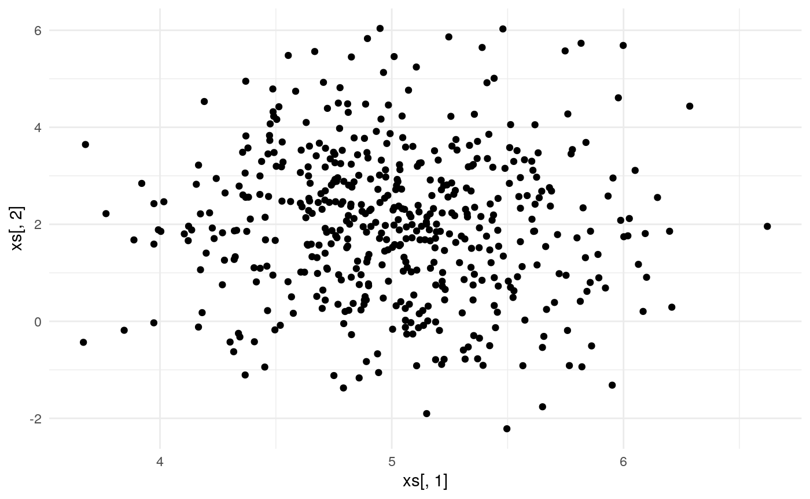
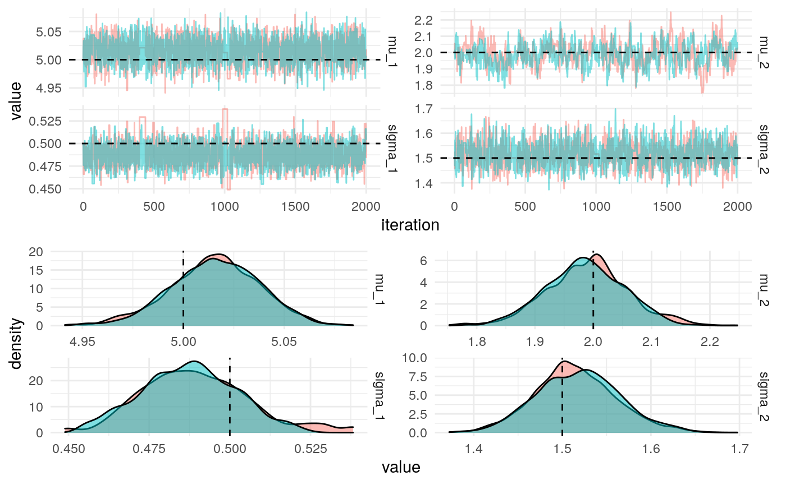
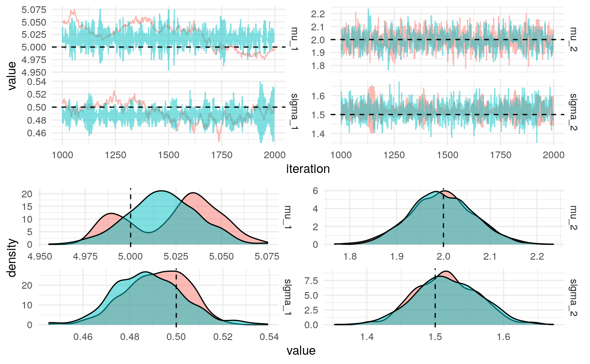
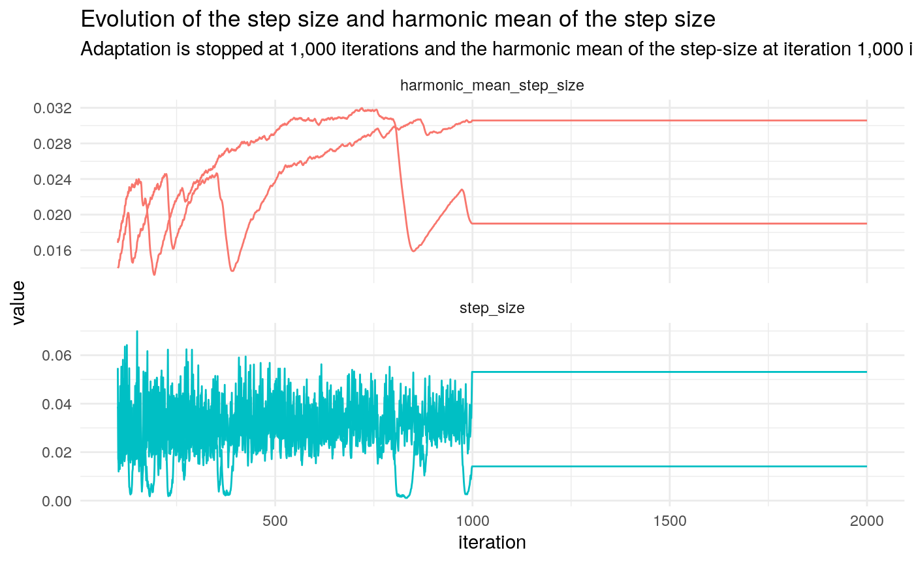

library(jonnylaw)
library(tibble)
library(tidyr)
library(dplyr)
#>
#> Attaching package: 'dplyr'
#> The following objects are masked from 'package:stats':
#>
#> filter, lag
#> The following objects are masked from 'package:base':
#>
#> intersect, setdiff, setequal, union
library(ggplot2)
theme_set(theme_minimal())This example is taken from a blog post that I wrote on Hamiltonian Monte Carlo. See that post for details of deriving the un-normalised log-posterior and gradients. I also compare the efficiency of HMC and the random-walk Metropolis algorithm by comparing the effective sample size per second.

future::plan(future::multiprocess())
iters <- jonnylaw::hmc(
log_posterior = bounded_log_posterior_bivariate(xs),
gradient = bounded_gradient_bivariate(xs),
step_size = 0.01,
n_steps = 4,
init_parameters = inv_transform(theta),
iters = 2e3
)#> Joining, by = "parameter"
#> Joining, by = "parameter"
We can use the Dual Averaging algorithm to learn the step size of the leapfrog steps.
iters <- hmc_da(
log_posterior = bounded_log_posterior_bivariate(xs),
gradient = bounded_gradient_bivariate(xs),
n_steps = 4,
init_parameters = inv_transform(theta),
iters = 2e3,
chains = 2
)actual_values <- tibble(
parameter = names(theta),
actual_value = theta
)
iters %>%
filter(iteration > 1e3) %>% # Remove warmup iterations
mutate_at(vars(starts_with("sigma")), exp) %>%
pivot_longer(-c("iteration", "chain"), names_to = "parameter", values_to = "value") %>%
jonnylaw::plot_diagnostics_sim(actual_values)
#> Joining, by = "parameter"
#> Joining, by = "parameter"
iters %>%
mutate(step_size = exp(log_step_size), harmonic_mean_step_size = exp(log_step_size_bar)) %>%
pivot_longer(c("harmonic_mean_step_size", "step_size"), names_to = "key", values_to = "value") %>% filter(iteration > 100) %>%
ggplot(aes(x = iteration, y = value, colour = key, group = chain)) +
geom_line() +
facet_wrap(~key, scales = "free_y", ncol = 1) +
theme(legend.position = "none") +
labs(title = "Evolution of the step size and harmonic mean of the step size",
subtitle = "Adaptation is stopped at 1,000 iterations and the harmonic mean of the step-size at iteration 1,000 is used in the HMC algorithm")
We can use empirical HMC to learn the optimal number of leapfrog steps.